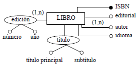
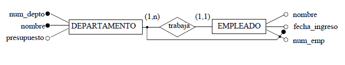
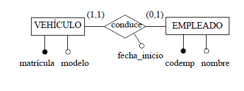
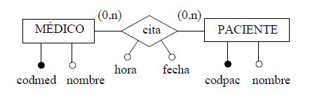

No se debe olvidar que, si en durante la etapa del diseño lógico se detecta alguna carencia o error en la etapa anterior (diseño conceptual), se debe subsanar dicho error en el esquema conceptual, y se debe generar una nueva versión de la documentación que se ha producido en dicha etapa.
La normalización es una técnica para diseñar la estructura lógica de los datos de un sistema de información en el modelo relacional, desarrollada por E. F. Codd en 1972.
Es una estrategia de diseño que parte de los atributos y éstos se van agrupando en tablas.
No se utiliza la normalización como una técnica de diseño de bases de datos, sino como una etapa posterior a la correspondencia entre el esquema conceptual y el esquema lógico, que elimine las dependencias entre atributos no deseadas.
Pasos a seguir para obtener un conjunto de tablas a partir del esquema conceptual.
A cada tabla se le dará un nombre, y el nombre de sus atributos aparecerá, a continuación, entre paréntesis.
El atributo o atributos que forman la clave primaria se subrayarán.
Las claves ajenas, mecanismo que se utiliza para representar las relaciones entre entidades en el modelo relacional, se especificarán aparte indicando la tabla a la que hacen referencia.
A este proceso se le denomina esquema
Datos de interés de los libros de una biblioteca:

El esquema lógico correspondiente es el siguiente:
LIBRO( isbn, título_principal, subtítulo, editorial, AUTOR( autor ), idioma, EDICIÓN( número, año ) )
Para escoger la clave primaria entre las claves candidatas se puede seguir las siguientes indicaciones:

El esquema lógico correspondiente es el siguiente:
DEPARTAMENTO(num_depto, nombre, presupuesto) DEPARTAMENTO.nombre es una clave alternativa EMPLEADO(num_emp, num_depto, nombre, fecha_ingreso) EMPLEADO.num_depto es una clave ajena a DEPARTAMENTO
Relaciones binarias
Según sean las cardinalidades máximas, las relaciones binarias se clasifican como se especifica a continuación:En función del tipo de relación, hay distintas posibilidades para representarlas en el esquema lógico.
Relaciones binarias uno a uno
A continuación, tres posibles esquemas lógicos correspondientes a este diagrama:
EMPLEADO(codemp, nombre) VEHÍCULO(matrícula, modelo, codemp, fecha_inicio) VEHÍCULO.codemp es una clave ajena a EMPLEADO, no acepta nulos VEHÍCULO.codemp es también una clave alternativa
VEHÍCULO(matrícula, modelo) EMPLEADO(codemp, nombre, matrícula, fecha_inicio) EMPLEADO.matrícula es una clave ajena a VEHÍCULO, acepta nulos EMPLEADO.matrícula es también una clave alternativa EMPLEADO.matrícula, EMPLEADO.fecha_inicio son ambas nulas o no nulas a la vez
(EMPLEADO.matrícula IS NULL AND EMPLEADO.fecha_inicio IS NULL) OR (EMPLEADO.matrícula IS NOT NULL AND EMPLEADO.fecha_inicio IS NOT NULL)
EMPLEADO(codemp, nombre) VEHÍCULO(matrícula, modelo) CONDUCE(matrícula, codemp, fecha_inicio) CONDUCE.matrícula es una clave ajena a VEHÍCULO, no acepta nulos CONDUCE.codemp es una clave ajena a EMPLEADO, no acepta nulos CONDUCE.codemp es también una clave alternativa
Relación muchos a muchos.
MÉDICO(codmed, nombre) PACIENTE(codpac, nombre) CITA(codmed, codpac, fecha, hora) ¡falta escoger la clave primaria! CITA.codmed es una clave ajena a MÉDICO, no acepta nulos CITA.codpac es una clave ajena a PACIENTE, no acepta nulos
Para escoger la clave primaria de la tabla CITA se deben buscar antes las claves candidatas, que dependerán del significado de la relación:
Nótese que (codmed, codpac) no es una clave candidata, ya que un mismo paciente puede tener varias citas con un mismo médico.
Se llama entidad madre, a la entidad genérica, y entidades hijas, a las subentidades.
Hay tres opciones distintas para representar las jerarquías.
La más adecuada se hará en función de su tipoSe muestran los tres posibles esquemas lógicos correspondientes al diagrama anterior.
Obtenidas las tablas con sus atributos, claves primarias, claves alternativas y claves ajenas, deben normalizarse.
La normalización garantiza que el esquema resultante se encuentra más próximo al modelo de la empresa, que es consistente y que tiene la mínima redundancia y la máxima estabilidad.